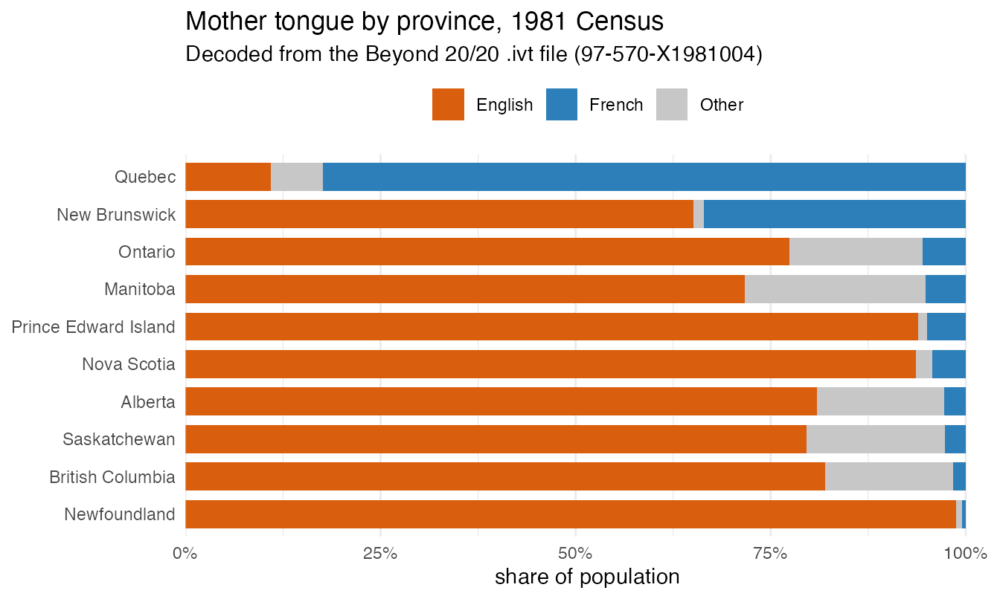

Getting started: reading an older census table
Source:vignettes/getting-started.Rmd
getting-started.RmdThis vignette walks through a typical use case: look up a table in the Statistics Canada catalogue, download and decode it, and work with the data.
This example uses an old table that is not available
in any alternative format: the 1981 Census Profile for Canada,
Provinces, Territories, Census Divisions and Census
Subdivisions (97-570-X1981004). Modern census
tables come with a tidy CSV and a Web Data Service API, and more recent
vintages are also available in SDMX format, but the pre-2001 vintages
are published only as Beyond 20/20
.ivt files — there is no CSV, no API, no easy-to-parse
alternative. canivt decodes them straight from the bytes,
so a 1981 profile becomes an ordinary data frame.
(Optional) set a cache
canivt can cache downloaded .ivt files and
the decoded Parquet so the second run is instant. Point it at a
directory (e.g. in .Renviron via
CANIVT_IVT_CACHE / CANIVT_DATA_CACHE, or per
session):
options(
canivt.ivt_cache = "~/canivt-cache/ivt", # raw .ivt downloads
canivt.data_cache = "~/canivt-cache/data" # decoded Parquet + catalogue
)Without a cache everything still works; it just re-downloads each session. The IVT cache is not needed if the Parquet files are the primary target — omitting it reduces the storage footprint without impeding work with the cached Parquet files.
1. Look up the table in the catalogue
statcan_ivt_catalogue() scrapes the StatCan census
datasets index into one tibble (one row per published table version),
cached as Parquet after the first call. Each row carries the
catalogue number, census_year,
title, topic and the download URLs. The
package ships with a cached version for convenience, but this can be
replaced with an up-to-date scrape by passing the
refresh = TRUE option.
catl <- statcan_ivt_catalogue()
# Find the 1981 census-division / subdivision profile
library(dplyr)
#>
#> Attaching package: 'dplyr'
#> The following objects are masked from 'package:stats':
#>
#> filter, lag
#> The following objects are masked from 'package:base':
#>
#> intersect, setdiff, setequal, union
catl |>
filter(census_year == 1981, grepl("Profile.*Census Divisions", title)) |>
select(catalogue, census_year, title)
#> # A tibble: 2 × 3
#> catalogue census_year title
#> <chr> <int> <chr>
#> 1 97-570-X1981004 1981 Census Profile for Canada, Provinces and Territor…
#> 2 97-570-X1981005 1981 Census Profile for Canada, Provinces and Territor…If you already know the product id you can skip this step entirely and go straight to step 2.
2. Download and decode with get_statcan_ivt()
get_statcan_ivt() resolves the id against the catalogue,
downloads the .ivt, decodes it, caches the result as
Parquet, and hands back an arrow dataset
connection. The second call skips the download and decode.
ds <- get_statcan_ivt("97-570-X1981004")
ds
#> FileSystemDataset with 1 Parquet file
#> 6 columns
#> geo_label: string
#> geo_name: string
#> geo_uid: string
#> values: string
#> profile: string
#> value: doubleThe table is a classic profile: one row per geography ×
profile characteristic, with the count in value.
The profile column holds the ~80 characteristics
(population, age groups, mother tongue, tenure, …) and
geo_name the bilingual place name.
3. Query the data you want
Because ds is an Arrow dataset you can filter and select
with dplyr verbs and only collect() the rows
you need. Here we pull the mother-tongue counts
(English / French / Other) for the ten provinces:
provinces <- c(
"Newfoundland - Terre-Neuve", "Prince Edward Island - Île-du-Prince-Édouard",
"Nova Scotia - Nouvelle-Écosse", "New Brunswick - Nouveau-Brunswick",
"Quebec - Québec", "Ontario", "Manitoba", "Saskatchewan", "Alberta",
"British Columbia - Colombie-Britannique"
)
res <- ds |>
filter(
geo_name %in% provinces,
profile %in% c("Mother tongue - English", "Mother tongue - French",
"Mother tongue - Other")
) |>
select(geo_name, profile, value) |>
collect()That query returns 30 rows — the real decoded 1981 counts.
4. Work with the data
A little tidying — short province labels, and mother-tongue shares within each province — then a stacked bar chart. In 1981 Quebec is overwhelmingly French-mother-tongue while New Brunswick is the one clearly bilingual province:
library(ggplot2)
plot_data <- res |>
mutate(province = sub(" - .*$", "", geo_name), # shorter province name
mt = factor(sub("Mother tongue - ", "", profile),
levels = c("French", "Other", "English"))) |>
mutate(share = value / sum(value), .by = province)
# order provinces by their French share
french_order <- plot_data |>
filter(mt == "French") |>
arrange(share) |>
pull(province)
plot_data |>
mutate(province = factor(province, levels = french_order)) |>
ggplot(aes(share, province, fill = mt)) +
geom_col(width = 0.75) +
scale_x_continuous(labels = function(x) paste0(x * 100, "%"),
expand = expansion(mult = c(0, 0.03))) +
scale_fill_manual(NULL,
values = c(French = "#2c7fb8", Other = "#c7c7c7", English = "#d95f0e"),
breaks = c("English", "French", "Other")) +
labs(y = NULL, x = "Share of population",
title = "Mother tongue by province, 1981 Census",
caption = "Data: Decoded from the Beyond 20/20 .ivt file (97-570-X1981004)")
Recap
library(canivt); library(dplyr); library(ggplot2)
statcan_ivt_catalogue() |> # 1. find the table
filter(census_year == 1981, grepl("Profile", title))
ds <- get_statcan_ivt("97-570-X1981004") # 2. download + decode + cache
res <- ds |> filter(...) |> collect() # 3. query the slice you want
ggplot(res, ...) + geom_col() # 4. graphThe same four steps work for any table in the
catalogue — 1981 profiles, 2021 dissemination-area crosstabs,
commuting-flow tables — because read_ivt() (which
get_statcan_ivt() calls) decodes every vintage through one
path. For the full public API see ?read_ivt and
?get_statcan_ivt; for the binary format itself see
vignette("ivt-format").